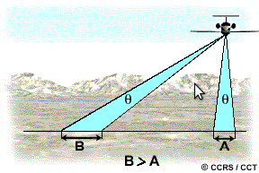

Resolution
Resolution is defined as the ability of an entire remote-sensing system, including lens antennae, display, exposure, processing, and other factors, to render a sharply defined image. Resolution of a remote-sensing is of different types like Spatial, Spectral, Radiometric and Temporal Resolutions.
Spatial Resolution
For remote sensing instruments, the distance between the target being imaged and the platform, plays a large role in determining the detail of information obtained and the total area imaged by the sensor. Sensors onboard platforms far away from their targets, typically view a larger area, but cannot provide great detail. The detail discernible in an image is dependent on the spatial resolution of the sensor.

Spatial resolution is a measure of the smallest object that can be resolved by the sensor, or the linear dimension on the ground represented by each pixel or grid cell in the image. An increase in spatial resolution corresponds to an increase in the ability to resolve one feature physically from another. It is controlled by the geometry and power of the sensor system and is a function of sensor altitude, detector size, focal size and system configuration.
In a digital image, the resolution is limited by the pixel size, i.e. the smallest resolvable object cannot be smaller than the pixel size. The intrinsic resolution of an imaging system is determined primarily by the instantaneous field of view (IFOV) of the sensor, which is a measure of the ground area viewed by a single detector element in a given instant in time.

Spatial resolution of passive sensors depends primarily on their Instantaneous Field of View (IFOV). The IFOV is the angular cone of visibility of the sensor (A) and determines the area on the Earth's surface which is "seen" from a given altitude at one particular moment in time (B). The size of the area viewed is determined by multiplying the IFOV by the distance from the ground to the sensor (C). This area on the ground is called the resolution cell and determines a sensor's maximum spatial resolution. For a homogeneous feature to be detected, its size generally has to be equal to or larger than the resolution cell. If the feature is smaller than this, it may not be detectable as the average brightness of all features in that resolution cell will be recorded. However, smaller features may sometimes be detectable if their reflectance dominates within a particular resolution cell allowing sub-pixel or resolution cell detection.

If the IFOV for all pixels of a scanner stays constant (which is often the case), then the ground area represented by pixels at the nadir will have a larger scale then those pixels which are off nadir. This means that spatial resolution will vary from the image centre to the swath edge.
Spatial resolution is best described by the size of an image pixel. Most remote sensing images are composed of a matrix of picture elements, or pixels, which are the smallest units of an image.. Image pixels are normally square and represent a certain area on an image. For Example, if a sensor has a spatial resolution of 20 meters and an image from that sensor is displayed at full resolution, each pixel represents an area of 20m x 20m on the ground. To gauge the resolution needed to discern an object, the spatial resolution should be half the size of the feature of interest.
A "High Resolution" image refers to one with a small resolution size. Military sensors for example, are designed to view as much detail as possible, and therefore have very fine resolution. On the other hand, a "Low Resolution" image is one with a large resolution size, i.e. only coarse features can be observed in the image. Commercial satellites provide imagery with resolutions varying from a few meters to several kilometers. Generally the finer the resolution, the less total ground area can be seen.


____________________________________________________________________________________

Procedure for the experiment is as follows. ___________________________________________________________________________________________________________________________________________